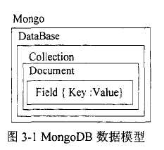
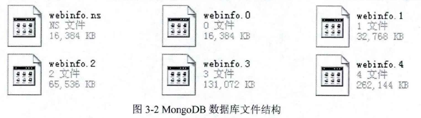
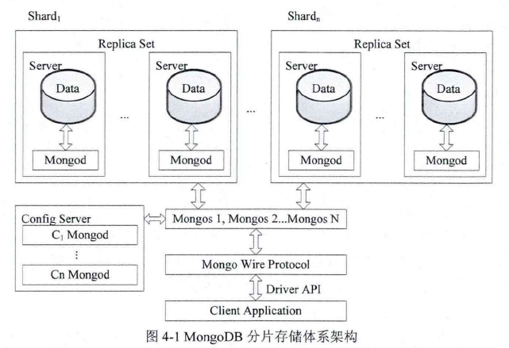

前言
这篇是 NoSQL数据库技术及其应用研究 的下篇，也是主要引用 NoSQL数据库技术及其应用研究 论文。
存储机制与反范式模式设计
数据模型
- 逻辑模型：
一个MongoDB系统由多个数据库组成，每个数据库有一组集合(collection) 组成，每个集合由任意个文档（Document）组成，而每个文档由一系列字段（Field）组成，每个字段是一个键值对（key-value pair），其中key是字段的名称，value是对应的属性值， 物理模型：
一个数据库在文件中的存储，其中webinfo是数据库名
.ns 文件是命名空间文件，存储的是一个哈希表，存储每个子命名空间的元数据。
.0 等是数据文件，新的数据文件比前一个文件大一倍，最大为2GB。数据文件有多个数据块（extent）组成，数据块由多个数据记录（record）组成。extent和record都是双向链表，record是存储的最小单位，存储BSON格式的数据。
使用GridFS文件系统规范，提供一种透明的机制将一个大文件分割成为多个较小的块对象（chunk）存储。这个还没有理解
存储架构
分为客户端和服务器，在服务器中运行Mongod提供服务，客户端应用程序通过调用 Driver API， 使用Mongo Wire Protocol通讯协议向mongod提交请求并获得应答。
反范式模式设计
关系型数据库的规范化理论提出了1NF, 2NF, 3NF, BCNF, 4NF 的范式概念，基本思想是通过模式分解来逐步消除数据依赖中不合适的部分，使模式中的各关系模式达到某种程度的分离。
具体的范式知识参考：关系型数据库之范式
因为MongoDB允许关系的嵌套和数组元素。意味着MongoDB更喜欢将信息组织在一起，这样在一些场景下增加则信息的聚合度，减少关联操作，同时也是查询变得简单。
但是这样意味着可能的增加冗余信息。
分布式存储机制与应用
MongoDB采用自动分片的分布式集群实现数据的横向扩展，在集群中使用复制集技术保证数据的可靠性。
自动分片机制
MongoDB分片存储体系架构：

分区算法：
MongoDB采用范围分区， 服务器中的分区配置的元数据使用2PC作为一致性算法。复制集技术：
采用半同步主从复制技术，主节点负责执行写操作和强一致性读操作，从节点负责执行最终一致性读操作，修复节点是指节点正在和主节点进行数据同步，结束之后状态变为从节点。从节点监听主节点oplog的更新；若有新的操作，每一个从节点都复制这些操作到自己的oplog，然后根据记录在自己的数据库上执行这些操作；
是从节点主动拉取oplog，还是主节点主动发送消息。我觉得是主节点主动合理。
主节点的重新选举：
机制还是比较简单，不能满足强一致性，只能保证基本没有问题。分片建选择机制：
分区粒度， 写扩展， 查询隔离。
查询机制
主要讲了MongoDB的查询语法和查询优化。还有自己的一点小小的建议。
这不是我关注的重点，以后有机会再补充。